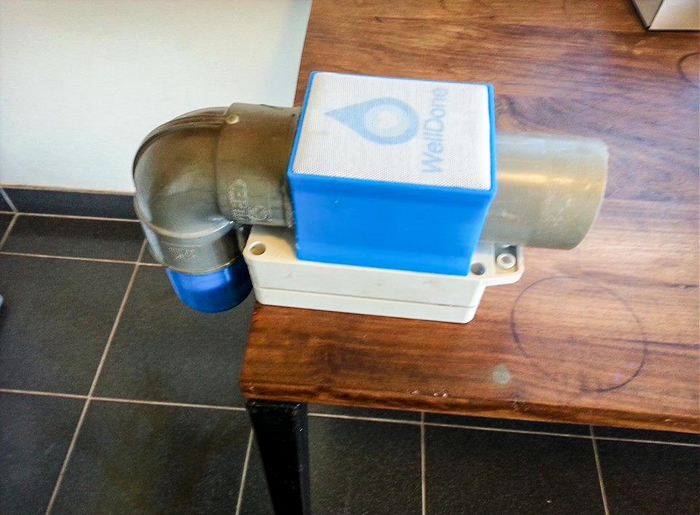
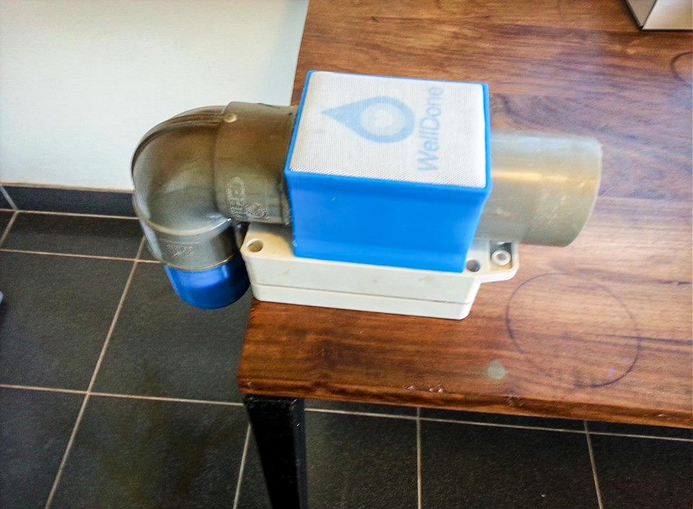
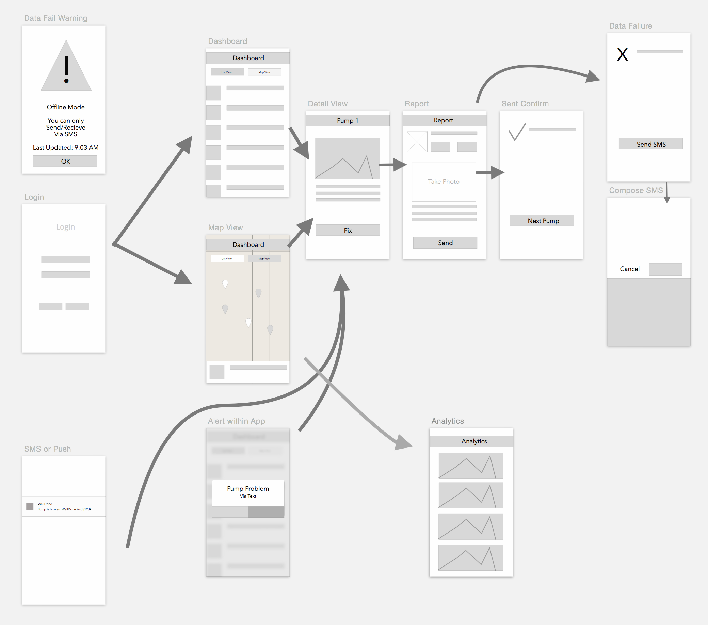
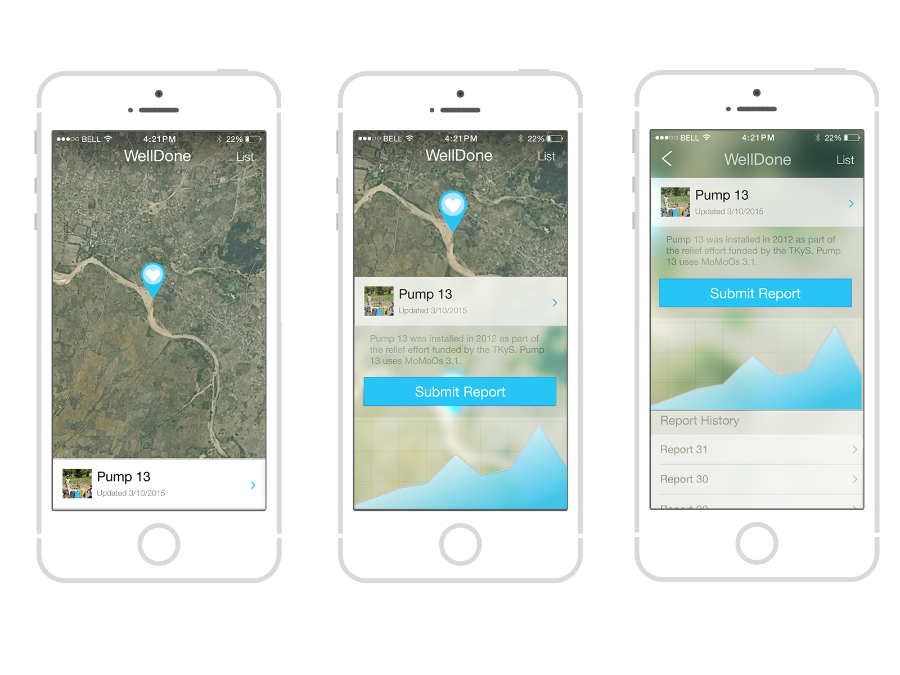
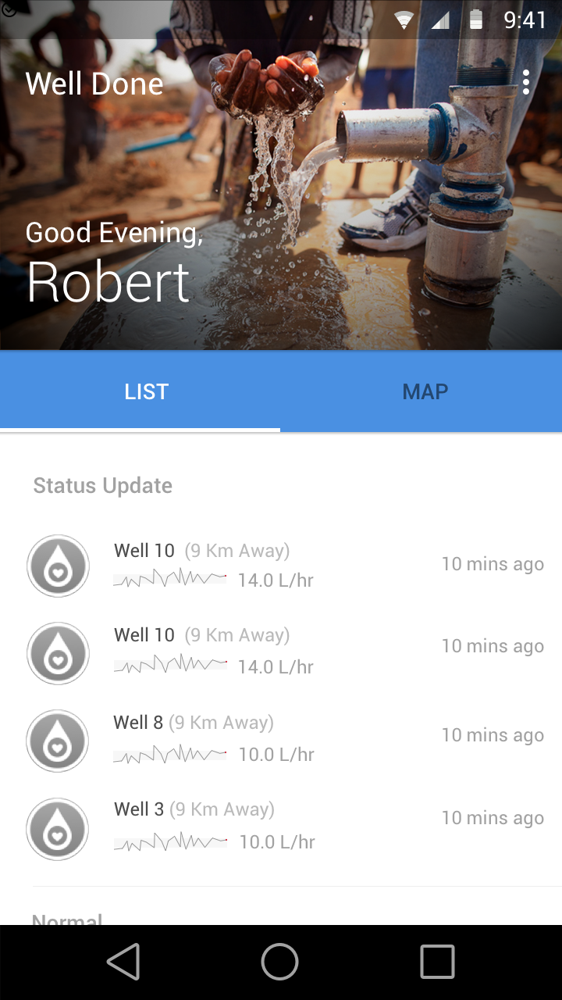
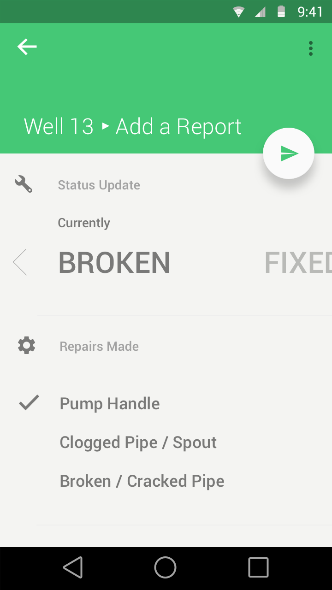

Making water well infrastructure more efficient
Well Done Mobile App / CodePath Group Project
Github: Android / iOS
WellDone is a non-profit organization that oversees the functioning of water pumps in Tanzania, with the effort to make communities there self-reliant. There are many organizations building wells, but often they end up neglected and eventually break down.
WellDone integrates mobile monitoring systems into pumps called MoMo’s. They gather information about pumps, wirelessly transmitting the data back to WellDone. WellDone and it's monitors stand out as a way to help keep the existing infrastructure working, a integral component to making progress in remote communities.
Our challenge was give technicians access to that data in the best format possible. In this app, we addressed the needs of local water pump engineers to bring the app with them to the field. They can view and get notified of the changes in health of the pumps, provide updates once they fix issues, navigate to other pumps, view the lay of the land, and do all of these with or without a data connection.
 A WellDone MoMo Monitor.
WellDone integrates mobile monitoring systems into pumps called MoMo’s. They gather information about pumps, wirelessly transmitting the data back to WellDone. WellDone and it's monitors stand out as a way to help keep the existing infrastructure working, a integral component to making progress in remote communities.
Our challenge was give technicians access to that data in the best format possible. In this app, we addressed the needs of local water pump engineers to bring the app with them to the field. They can view and get notified of the changes in health of the pumps, provide updates once they fix issues, navigate to other pumps, view the lay of the land, and do all of these with or without a data connection.
 A WellDone MoMo Monitor.

A Data-based Interface
The first iteration that was delivered on the CodePath internal demo day was heavily based on integrating data into a user's workflow. This was primarily done through the introduction of charts and graphs as a user looks at the details of a pump on a map or list view.
Android

The iOS version of the app took advantage of a live-blurring visual treatment with the map to creat a dynamic background that adjusts according to its location. In additon, the routing functions of the app were baked into the app to create a more seamless experience for the user.
iOS

Iterating with Material Design
Our second and final iteration to the app was to update and expand the features of the Android version of the app, which was selected as a finalist for CodePath's public demo day. We decided to update the visual design to become more in line with the new Material Design guidelines introduced by Google in June 2014.
 
Additionally, the app also features a SMS data fallback: the app is capable of sending and recieving data by encoding data in SMS messages- a feature that allows users to access the server in remote parts of Africa without a data connection.

By putting real-time data in the hands of the local engineers, WellDone will be not only providing technology to support the infrastructure of Tanzania but also the tools to maintain it and increase their efficiency.

{kind=link}